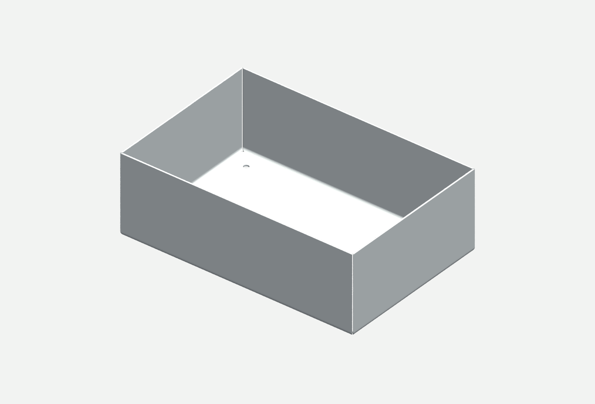
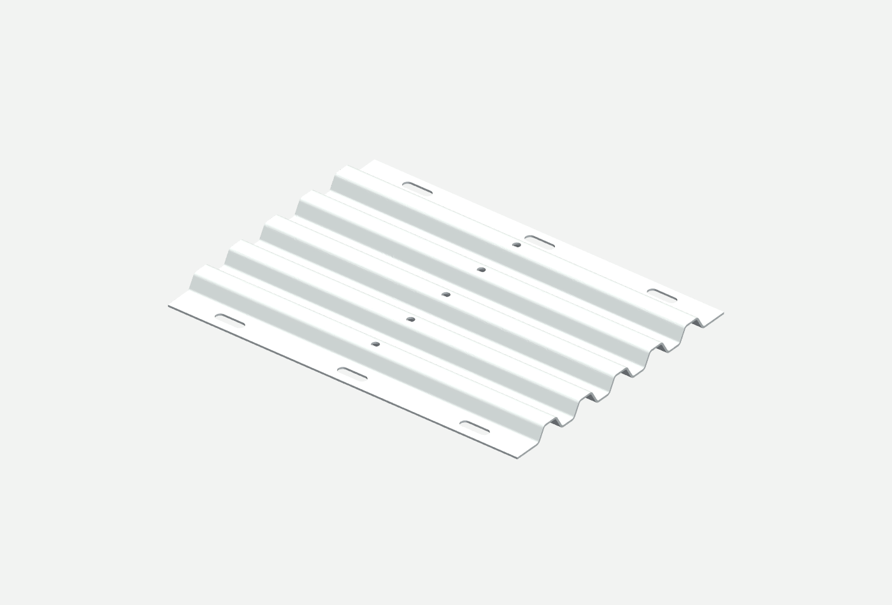
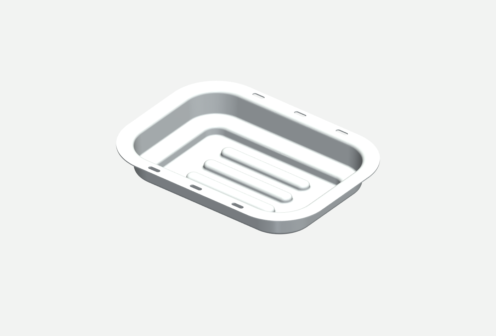
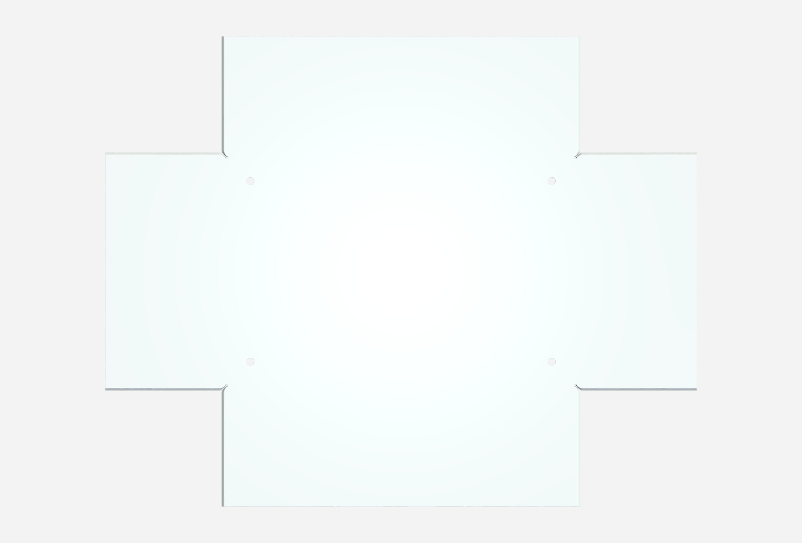
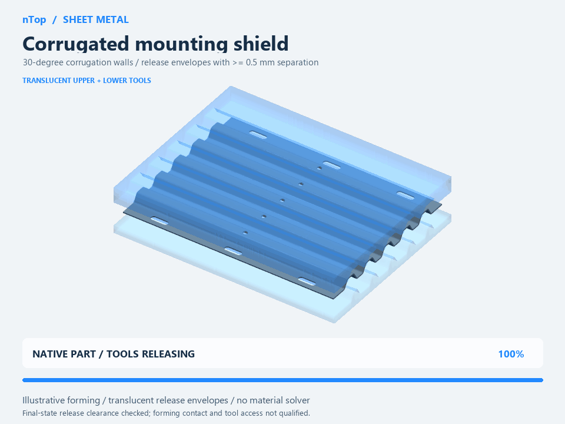
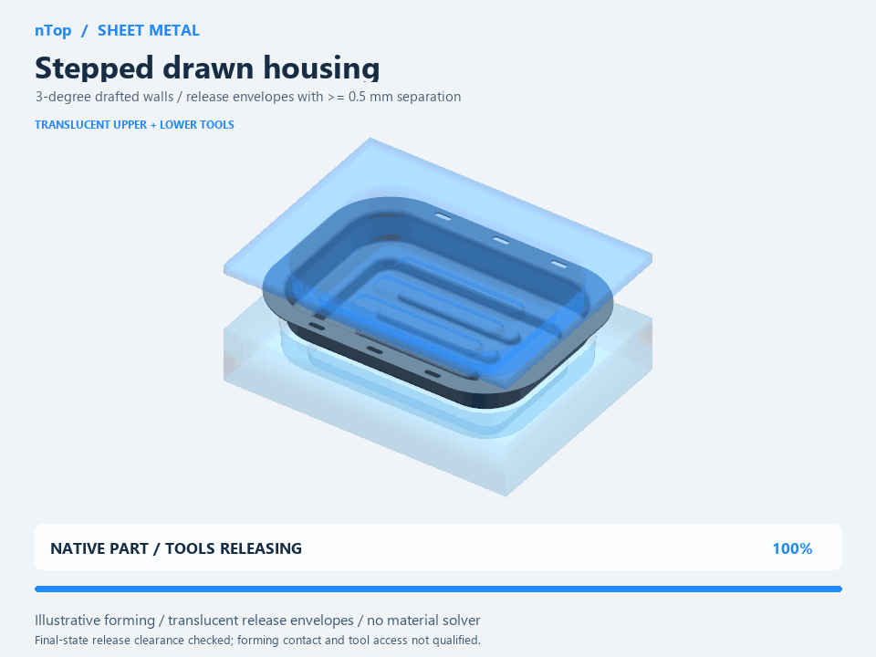
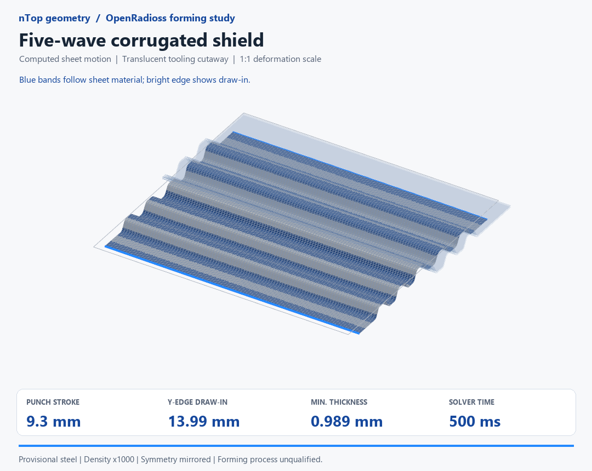
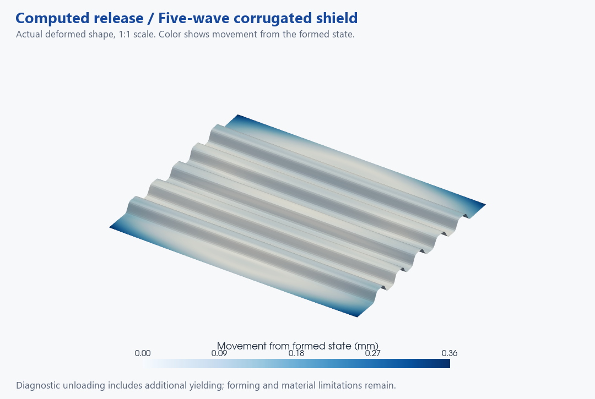

Start with bends
Explicit thickness, circular bends, rounded relief roots and 45° corner seams.
Open enclosure notebookCommunity edition · 01
Where nTop’s implicit geometry helps, where traditional B-rep CAD remains useful, and how to connect a reusable notebook to an external forming solver.

Explicit thickness, circular bends, rounded relief roots and 45° corner seams.
Open enclosure notebook
Five waves, twenty bends and eleven late piercing features from one construction pattern.
Open shield notebook
Two drafted wall levels, a mounting flange and hollow closed beads.
Open housing notebookFigures are host-rendered meshes exported from the native nTop models. These are target geometries; the FE results later in this report are separate, deformed shell representations.
01 / The practical advantage
The strongest use of nTop here is generating a family of related parts and geometric tool concepts from explicit, shared definitions. As repeated features and spatial variation grow, fields provide a useful way to express the design without manually maintaining every resulting face and edge. This is an engineering interpretation of the study, not a measured speed benchmark.
| Task | What nTop contributes | Where B-rep CAD fits |
|---|---|---|
| Repeated beads and corrugations | A common profile and coordinate map express many related features. Booleans combine the resulting implicit bodies. | Patterns and parametric features also work well, particularly for modest feature counts and familiar tooling. |
| Spatial variation | Fields can drive geometry from position, distance or analysis data. A next step is smoothly varying bead placement or clearance. | Equations, scripts and surfaces can also express variation; the representation and editing effort differ. |
| Part and tool consistency | Shared thickness, radii and profile definitions can feed target geometry and external tool-generation scripts. | Associative tooling and linked CAD models provide similar intent. Either approach needs a controlled source of dimensions. |
| Automated families | A notebook graph and API support repeatable construction, evaluation and exports. Fewer explicit edge references can reduce one source of rebuild fragility. | Traditional CAD also has APIs and design tables. No claim of failure-free geometry or unique automation is warranted. |
| Production sheet-metal detailing | Useful for custom shape generation and geometric checks; development rules must be implemented and verified. | Mature bend tables, flat-pattern features, bend notes, drawings and B-rep exchange often make standard brake parts simpler to release. |
Representation and field capabilities: nTop’s B-rep/implicit explanation and field-driven design. Bend-table context: SOLIDWORKS bend allowance and deduction.
A signed distance field encodes distance as well as inside/outside information. An arbitrary implicit scalar field does not necessarily retain that distance meaning after mapping or combination. Constant-thickness offsets and clearances therefore need geometric checks; subtracting a scalar from any field is not automatically a physical offset.
02 / What to highlight in the notebook
Open a copy of a supplied notebook and expand Inputs, Calculations, Construction and Checks. Expressions holds generated intermediate arithmetic. The labels below are actual saved block names. The notebooks are unchanged baseline files; this guide adds interpretation without altering their geometry.
In the enclosure, trace Thickness and Inside bend radius into Geometric midsurface radius, then compare 90 degree bend allowance. Geometry uses Ri + t/2. Development uses Ri + K·t. K is a process-dependent assumption, not a universal material constant.
Circular root exclusion, Relieved planar floor and Y +1 45 degree trim define the relief and diagonal seam. Follow Y +1 developed field to Flat enclosure blank: the fold map carries the same trimmed geometry into development.
The 0.5 mm seam gap and R0.5 roots are study choices. These through-thickness miter bevels require edge preparation; the developed solid is not an ordinary perpendicular-cut blank.
In the shield, Corrugated stock section defines line-and-arc bends; Corrugated stock extrudes the section. Slotted stock and Crest pierced stock add the openings late. Five waves and 60° bends are compiled choices in this saved recipe, not exposed count/angle inputs.
Two-level meridian and X field, Y field, Z field construct Stepped housing stock. The 3° draft is built into the meridian as an 87° wall direction; it is not a named Draft input.
Trace Closed bead master meridian, Bead floor opening 0, Closed bead 0, Opened bead stock and Beaded stock. The old floor under the bead is removed. This preserves a hollow underside instead of adding a solid rib to an intact floor.
CHECK bend 45 inner, CHECK root 1 1 void, CHECK bead 0 cavity and CHECK draft flank 2 station 0.25 face -1 are examples of sampled native checks. Mesh topology, material flow and tool release require additional evidence.

Read the full walkthrough · Inspect the exact input, output and block inventory · Enclosure recipe
03 / Two live demos
These browser calculators illustrate analytic relationships. They do not execute nTop, solve deformation or update the downloadable notebooks.
bend allowance = θ(Ri + K·t)
Change K alone: the sheet boundaries stay fixed while development changes. θ is in radians in the equation. The enclosure defaults are illustrative, not a calibrated bend table.
horizontal opening gain = Δz · tan(α)
For correctly oriented matching straight flanks. Normal opening gain is Δz·sin(α). This is incremental geometric separation, not the die/punch forming gap. It omits friction, springback, waviness, reverse draft and local tool collisions. A positive value does not establish release feasibility.
04 / Motion and material flow
The first two animations illustrate target geometry and translucent tools. The third shows sheet coordinates calculated by OpenRadioss. Use the controls to play motion or return to a still frame.

An authored mapping moves the sheet. Tool envelopes and release clearances are geometric illustrations. Material flow, stress and contact are not solved.

Provisional 3° wall draft and a constant-thickness target. The prescribed motion is not evidence of feasible single-stage drawing, thinning or force.

13.99 mmmean Y-edge draw-in at the end of the recorded stroke
17.62%maximum computed thinning
The blank starts flat and deforms through contact and material response. The 4,750 quarter-model shells are reflected about two symmetry planes for display. The front half of the tools is hidden for visibility.
These tools are reconstructed externally from the shared analytic definitions; nTop is not the forming solver. The sheet is formed before the eleven holes are pierced. This result passes the selected inertia screen, but material coverage and mesh/density sensitivity remain unresolved.
05 / Results that limit the claim
Three of the six complex part families received external FE runs. The other families require staged operations such as lancing, collaring and return flanging that are outside these solved cases. This publication reuses recorded results; it introduces no new solver runs.
Percent reduction from original thickness. All three cases exceed the strain range of the source hardening data. Crossmember inertia and housing contact checks also fail.
Maximum nodal displacement, not a signed die correction. All three unloading cases settle under the selected screens, but continue to accumulate plastic strain.
| Recorded case | Mean Y draw-in / mm | Min thickness / mm | Peak KE / IE* | Max release motion / mm |
|---|---|---|---|---|
| Five-wave corrugated shield | 13.99 | 0.989 | 1.46% | 0.360 |
| Beaded joggle crossmember | 25.90 | 0.843 | 39.49% | 0.302 |
| Stepped housing with three floor beads | 19.48 | 0.561 | 1.58% | 0.424 |
*Maximum sheet kinetic/internal energy ratio after internal energy first exceeds 5% of its peak. The study screen is 5%. Numerical precision is not an accuracy claim. Data: recorded result summary.

The shield continues an exact solver restart; the crossmember and housing use full shell-state transfer. Tool contacts are removed, symmetry is retained and the central Z datum remains fixed. Explicit dynamic relaxation then lets the sheet unload.
Selected settling screens are ≤0.01 mm tail motion, kinetic energy / formed internal energy ≤10⁻⁴, and at least 500 ms relaxation. They pass. Additional reported plastic strain is about 0.0316, 0.0312 and 0.0514 respectively, exceeding the 0.001 elastic-only screen.
Call these elastoplastic unloading diagnostics. They do not establish elastic-only springback, validated final dimensions or a usable die-compensation field.
OpenRadioss latest-20260728; quarter symmetry; QEPH shells with five through-thickness integration points; E = 206 GPa, ν = 0.3 and benchmark anisotropy r₀ = 1.73, r₄₅ = 1.34, r₉₀ = 2.24. Friction is 0.129. The hardening table ends at plastic strain 0.30; all forming cases exceed it. Nominal sheet density is scaled by 1,000 in these exploratory runs. No damage, self-contact or asymmetric wrinkling is resolved.
The shield has unresolved mesh/density sensitivity. The crossmember fails the quasi-static inertia screen (39.49% peak KE/IE) and a contact screen. The housing has 53.28% computed local thinning, about 11.36 mm upward holder travel and a failed contact-side check; its single-draw proposal is not accepted. Housing holder load is 1.8 kN per quarter, 7.2 kN full equivalent.
Unloading uses DYREL β = 1 with T = 100 ms. Relaxation time is an artificial numerical duration, not measured press-cycle time. State transfer preserves the reported stress, strain, thickness, orientation, plastic history and velocities; transfer and direct restart are not identical transients. Convergence and material calibration remain prerequisites to compensation.
Method context: Altair’s explicit-forming and springback example and DYREL reference. These sources explain the method; they do not validate the geometry or numerical values in this study.
06 / A defensible workflow
Keep thickness, radii, datums, draft direction and local feature rules explicit. A candidate stamped blank is an input to process development; it does not follow from target shape alone.
Use measured material data, contact/friction calibration, a credible holder strategy, appropriate mesh and loading-rate studies, and experimental draw-in/thickness comparisons. Verify forming stages and piercing order.
Use strain or draw-in to revise features and blank shape. A smooth, regularized displacement field could drive an iterative die-compensation study. That future feedback loop is a good fit for fields, but has not been completed here.
Check tessellation tolerance, tool-surface quality and any B-rep conversion. Complete tooling details, tolerances, drawings, press constraints and shop trials separately.
07 / Reuse and provenance
Three native notebooks and matching JSON recipes; the exact block walkthrough; three original study GIFs; selected original figures; two browser calculators; native mesh checks; numerical summaries and a source ledger. The complete FE execution environment, large result meshes and solver binaries are not included.
Native compatibility: the files record development version 6.1.0. The catalog uses 6.1+ to reflect that header. Compatibility with a specific public release has not been tested. Open a copy in a compatible build; the HTML remains usable independently.
MIT license for the original package material. Linked third-party documentation and the nTop/OpenRadioss applications retain their own licenses. No source photographs, supplier CAD, private machine paths or application executables are bundled.
{kind=link}
{kind=link}
{kind=link}